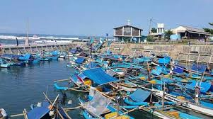

Saya dilahirkan di daerah yang terkenal akan sumberdaya pertanian dan perikanannya. Beras Pandan Wangi terkenal beras yang sangat wangi dari daerah Cianjur, dan Kolam ikan banyak ditemukan di daerah saya. Karena hal itu saya memilih jurusan yang memiliki hubungannya dengan potensi sumberdaya daerah saya. Sistem Informasi menjadi pilihan saya dengan tujuan ingin memajukan sektor kelautan dan perikanan yang terintegrasi dengan teknologi yang bisa memudahkan masyarakat. Saya memiliki rencana untuk membangun sektor kelautan dan perikanan di Kabupaten Cianjur menjadi lebih baik lagi. Teknologi informasi mengenai kelautan, perikanan, dan bisnis yang terintegrasi internet. Serta memberikan informasi yang cepat dan akurat Lebih mengenal Cianjur